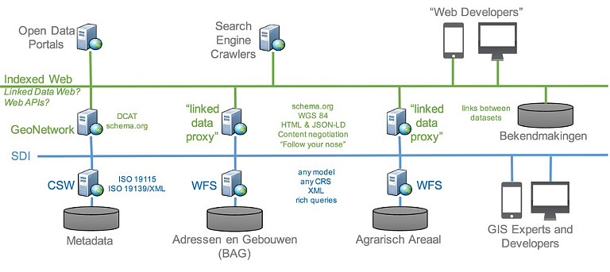
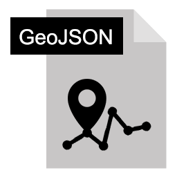
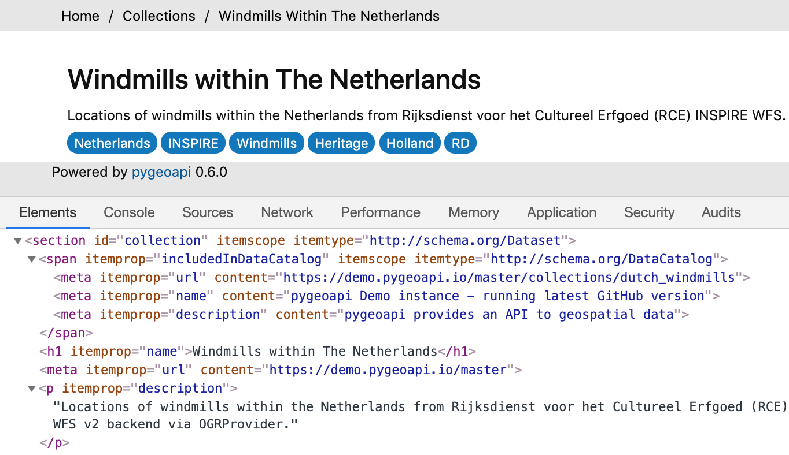
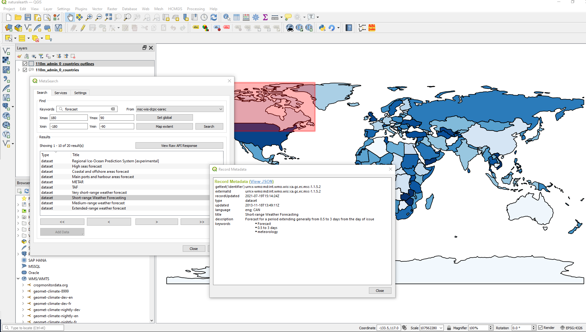
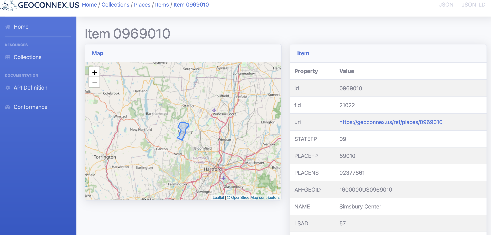
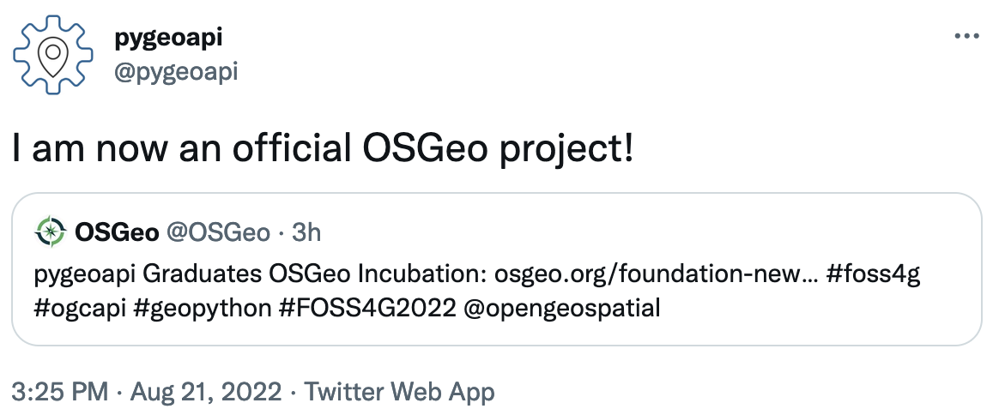

An OGC API to geospatial data

This presentation available at pygeoapi.io/presentations/ogc-stack-winter-school-2022
This video available at youtube.com/watch?v=3LRMg3lP3-0
Table of contents
- Geospatial API evolution
- REST/JSON/OpenAPI/Swagger
- OGC activity
- Say hello to pygeoapi
- Core capabilities
- Deploying
- Production instances
- Roadmap
- Support
Geospatial API evolution
1990s
- Spirit of XML-RPC/CORBA
- SOAP/WSDL/UDDI
- Service Oriented Architecture (SOA)
- Strong concept of RDBMS as the backend
- OGC WMS (1999)
2000s
- Web 2.0
- JavaScript/AJAX/Google Maps
- Slippy maps, tiles
- OGC WFS (2002), WCS (2003), WPS (2005), CSW (2007)
Realities of OGC web services
- Key Value Parameters (KVP) or XML encodings
- Requests using HTTP GET, HTTP POST and SOAP
- Responses as XML (GML)
- Error handling as custom ExceptionReport within an HTTP 200 response
- Exhaustive specifications/requirements
Sample response from an OGC WFS 1.0/2.0 service
More realities
- Complex machinery/architectures (e.g. ldproxy) for services to be crawlable
- Challenging for web developers to implement
- Challenging for mainstream web integration (search indexing)
- Geonovum testbed showed OGC world can easily be made crawlable, and crafted LDProxy
REST/JSON/OpenAPI/ Swagger
REST
- REpresentational State Transfer (REST)
- HTTP verbs (GET/PUT/POST/DELETE)
- HTTP codes (200, 201, 404, etc.)
- Uses URI to identify resources
- Content negotiation (media types)
- Stateless
JSON
- JavaScript Object Notation
- Easy to write and understand
- Very popular among web developers
- JSON is first class in RESTful web services
- No rigid standards (for better or worse)
OpenAPI
- Specification on how to describe a REST API
- Defines endpoints, request parameters, response
- Programming language agnostic
- Formerly Swagger
Swagger
- OpenAPI client tooling
- Robust, web developer focused
- Automated documentation, testing, code generation
OGC activity
W3C Spatial Data on the Web Best Practices (2017)
- Recommendations on formats, identifiers, access, licensing, provenance
- Being webby
- w3.org/TR/sdw-bp
Design patterns
- Being webby (humans, search engines)
- Developer friendly
- Lightweight specification development
- Removing HTTP use as a tunnel
/ows?request=GetFeature&typename=roads&featureid=5- /api/collections/roads/items/5
-
Modular specification development
- Core and extensions
Timeline
- 2017: W3C Spatial Data on the Web Best Practices
- 2017: OGC API Whitepaper
- 2018: WFS3 Hackathon, Weather on the Web API Hackathon
- 2019 - present: OGC API Hackathons
- OGC API Roadmap
Future OGC standards
- OGC API - Common (OWS Common)
- OGC API - Features (WFS)
- OGC API - Coverages (WCS)
- OGC API - Maps (WMS)
- OGC API - Tiles (WMTS)
- OGC API - Processes (WPS)
- OGC API - Records (CSW)
- OGC API - Styles (SE/SLD)
OGC activity on GitHub
- webby
- Specification development
- Issue tracking/discussion/collaboration
- Standards written in AsciiDoc (!)
- Standards released as HTML (!) or traditional PDF/etc.
- Gitter chat
Project overview
Project overview
- A Geopython project
- Created by Tom Kralidis in 2018 on Valentine's Day with ❤️
- OSGeo Project
Project Overview
- Geospatial data Web API framework via OGC API
- REST/JSON/OpenAPI/Swagger
- OGC Compliant
- OSGeo Project
- International team (Canada, Netherlands, Greece, Italy, New Zealand, United States, Spain)
- Numerous core contributors
- 21000 upstream contributors (dependencies)
Install in 5 minutes
python3 -m venv pygeoapi
cd pygeoapi
. bin/activate
git clone https://github.com/geopython/pygeoapi.git
cd pygeoapi
pip3 install -r requirements.txt
python3 setup.py install
cp pygeoapi-config.yml example-config.yml
vi example-config.yml # edit as required
export PYGEOAPI_CONFIG=example-config.yml
export PYGEOAPI_OPENAPI=example-openapi.yml
pygeoapi openapi generate $PYGEOAPI_CONFIG --output-file $PYGEOAPI_OPENAPI
pygeoapi serve
# in another terminal
curl http://localhost:5000 # or open in a web browser
Technical Overview
- Publishing (leaves data pristine/alone)
- Fits to the data (not the inverse)
- Leverages powerful ecosystem of Python packages
Technical Overview
- Core abstract API; web framework agnostic (default Flask)
- YAML configuration (metadata, dataset connections
- Automated OpenAPI document generation (data binding)
- Robust plugin framework (data connections, formats, processing)
- Easy deployment (pip3 install, Docker, conda, UbuntuGIS)
- Minimal dependencies

Feature Data Providers
 |
 |
 | ||
| Elasticsearch | PostgreSQL/PostGIS | CSV | Spatialite | GeoJSON |
* also via GDAL/OGR Provider
Feature Data Providers - GDAL/OGR

- Via OGR-Python bindings
- Unleashes ~100 Vector Formats! (WFS 1/2, GeoPackage, Shapefile, GeoJSON, PostGIS, ...)
- Paging, reprojection, spatial/attribute query
- Unlock existing WFS 1/2s!
Coverage Data Providers
| xarray | rasterio |
- NetCDF, Cloud Optimized GeoTIFF (COG)
Tile Data Providers
| minio | ZXY directory tree |
- MapBox Vector Tiles via tippecanoe
Map Providers
 |
|
| MapServer/MapScript | WMS Facade |
Metadata Providers
|
|
| Elasticsearch | TinyDB |
Processing framework
- Expose Python workflow as processes
- Process manager support for job control (TinyDB)
- Implement your own!
Implementing your own Plugin
- Develop / propose / maintain as core plugin
- Develop / maintain in your own repository
schema.org
- Lower the barrier to data search
- HTML encoding is annotated as schema.org/Dataset to facilitate search engines
- Google dataset search locates pygeoapi datasets
Linked Data - JSON-LD
- JSON-LD provided as additional representation
- Default out of the box functionality for most pygeoapi resources / endpoints
- Additional configuration
Core Capabilities

OpenAPI
OGC API - Features

OGC API - Coverages

OGC API - Environmental Data Retrieval

OGC API - Tiles

OGC API - Records

OGC API - Processes

SpatioTemporal Asset Catalog (STAC)

HTML templating

Latest developments
OSGeo Project
 www.osgeo.org/foundation-news/pygeoapi-graduates-osgeo-incubationNew core committers
Welcome Joana Simoes, Ph.D (@doublebyte)

- Developer Relations, OGC
- Long time contributor to FOSS4G
- OSGeo Charter member circa 2017
- Vice-president OSGeo Portugal Local Chapter
- pygeoapi: OGC API Sprints, Features, Tiles, MongoDB, Elasticsearch
New core committers
Welcome Ben Webb (@webb-ben)
- Lincoln Institute of Land Policy
- Center for Geospatial Solutions
- US Internet of Water
- pygeoapi: Provider plugins
OGC API sprint participation
- Leading/following implementation
- Rapid/early adoption of specifications/update
- Experimentation (servers, clients)
- OGC/OSGeo/ASF Joint Sprint (March 2022)
- Collaboration
- OSGeo projects
- OGC API implementing clients/servers
OGC API - Routes Implementation
- In development (Skymantics/Nacho!)
- Great work Skymantics/Nacho!
OGC API - Transactions Implementation
- OGC Metadata Code Sprint 2022
- Records, Features
OGC API - Maps Implementation
Django app
- Django application project
- django_app folder next to
flask_app.pyandstarlette_app.py urls.pywith routesviews.pywith the binding of pygeoapi core API into the process of Request/Responsesettings.pywith the pygeoapi configuration path- Add
--djangooption to the cli command to serve the usual Django server - Make the Django app reusable
- Challenges:
- Use DRF serializers
- Inject generated OpenAPI document into drf-spectacular
- Inject Jinja2 templates or use Django templates natively
- github.com/geopython/pygeoapi/issues/586
Hierarchical collections
resources:
naturalearth/10m-cultural-vectors/admin_0_countries:
...
naturalearth/10m-physical-vectors/coastline:
...
docs.pygeoapi.io/en/latest/configuration.html#hierarchical-collections
More new features
- HTML: migration to Bootstrap
- Hidden resource publication (publishing without advertising)
- New provider plugins: (Esri, Socrata, STAC HATEOAS)
- Anti-meridian support
- Gzip support
Deploying
Packaging
Numerous deployment options
- PyPI
- UbuntuGIS
- Docker
- Conda
- FreeBSD
- OSGeoLive
Docker overview

- pygeoapi Docker Images on DockerHub
- Images create Linux containers running content
- Use Docker Images to test locally or deploy in server
Docker options
- Custom config via Docker Volume Mapping
- Run with Docker Compose
- Subpath running via Flask
SCRIPT_NAMEenvironment variable - Examples
Scaling pygeoapi
 Cloud clustering with high availability
Cloud clustering with high availability
Production instances
Canada
Meteorological Service of Canada GeoMet platform
- OGC web services platform of Canadian weather, climate and water data
- Realtime weather
- Numerical weather prediction
- Hydrometric and Climate archives
MSC pygeoapi implementation
WIS2 in a box
- WMO Information System 2.0
- Event-driven weather/climate/water data exchange
- WMO Reference Implementation
- API component


US Geoplatform.gov
- US Geospatial Platform (Geoplatform) provides a central point of access to federal geospatial metadata, services and data
- Aligns with FAIR principles
- Powered by numerous FOSS4G components
- 100+ National Geospatial Data Assets

eMOTIONAL Cities
- Mapping the cities through the senses of those who make them
- Urban living and mental health and wellbeing
British Geological Survey - OGCAPI Server
- BGS OpenGeoscience geospatial data

GeoE3
- A Geospatially Enabled Ecosystem for Europe
- Data integration platform demonstrating how vital connections between existing and emerging national, regional, and cross-border digital services can be made
geoconnex.us
- The Geoconnex project is about providing technical infrastructure and guidance to create an open, community-contribution model for a knowledge graph linking hydrologic features in the United States, published in accordance with Spatial Data on the Web best practives as an implementation of Internet of Water principles
River Runner
- OGC API - Features and OGC API - Processes implementation of pygeoapi supporting Global River Runner
- Examples

Roadmap
Roadmap
- OGC API Improvements: Processes management
- More data providers
- Refactoring / pre 1.0 adjustments
- Content negotiation (e.g. Response as GeoPackage, GML,...)
GeoNode integration
- Next generation GeoNode API GNIP-51
- New v2 GeoNode REST API has been merged into master: GNIP-79
- Discussion needed to determine how GeoNode could use pygeoapi as a backend:
- Metadata (Resource base model -- similar to pycsw GeoNode integration)
- Direct Elasticsearch integration
- For OGC API Features, Maps, Styles, Tiles, Coverages (similar to GeoServer and QGIS Server)
- How would auth work in this case?
Support
Service providers
- training
- setup/installation/deployment
- custom integration
- bug fixing
- features/enhancements
- core development
- maintenance/packaging/distribution
- documentation
Links
- Home: pygeoapi.io
- Docs: docs.pygeoapi.io
- Demo: demo.pygeoapi.io
- GitHub: github.com/geopython/pygeoapi
- Docker: hub.docker.com/r/geopython/pygeoapi
- Chat: gitter.im/geopython/pygeoapi
- Mail: lists.osgeo.org/mailman/listinfo/pygeoapi
- Twitter: twitter.com/pygeoapi
Thank you!
@tomkralidis @JMendesDeJesus @normanbarker @perrygeo @justb4 @pvgenuchten @tzotsos @alpha-beta-soup @francbartoli @doublebyte @webb-ben